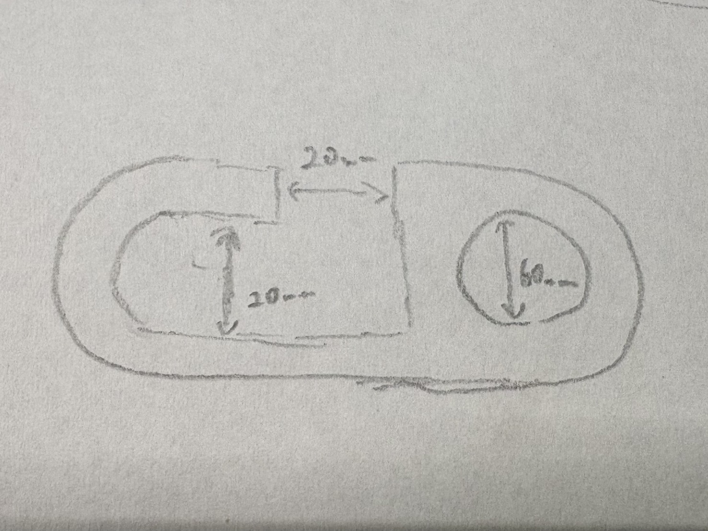
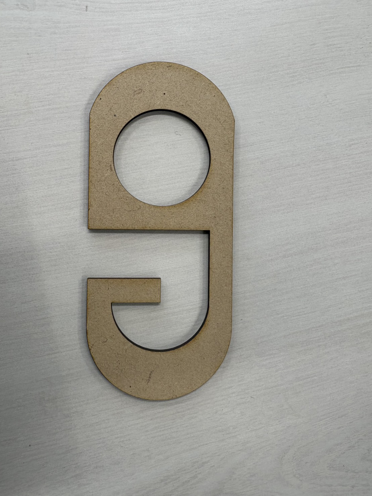
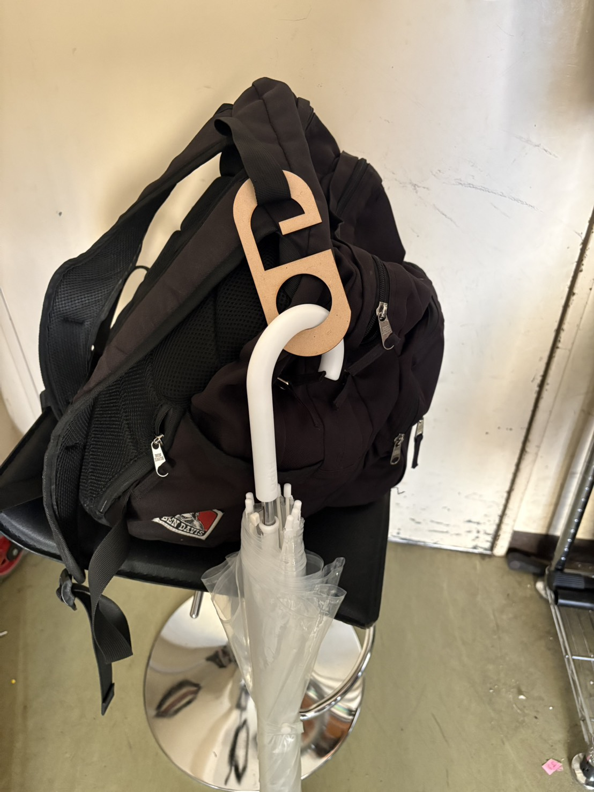
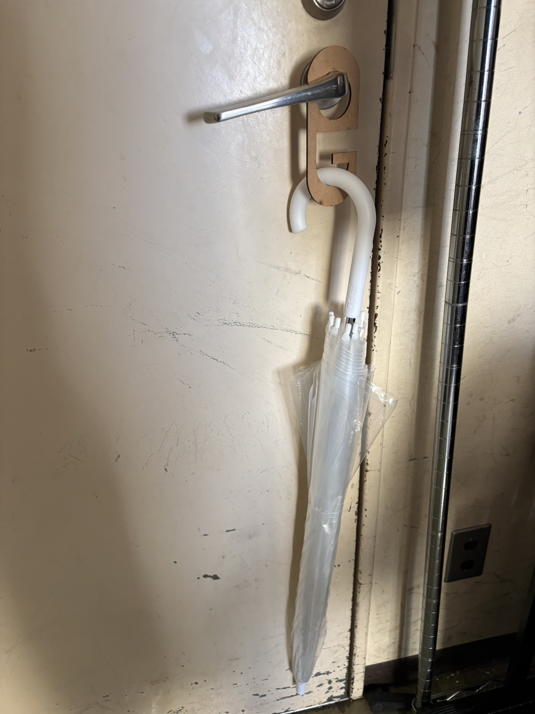

・構想段階のスケッチ

・完成した傘立て

・設計ファイル
dxfファイル
aiファイル
・作品の説明
この作品は、どこでも傘が立てられるようにするためのものです。
使用方法は、まず、傘の持ち手の部分をこの作品の穴に入れます。
その次に、反対側のフックの部分を、傘を立てたい場所のドアノブやフックに引っ掛けます。

・作った理由
皆さんも、傘を立てておきたいけど場所がないときがあると思います。
そんな時に、コンパクトでどんなところにも対応する傘立てがあれば良いと思い、制作しました。
・制作プロセスの中で調べたこと
傘の持ち手の部分の大きさを調べました。取っ手の部分の直径は、約15-20mmでした。
そのため、穴の部分は、余裕を持たせて設計しました。
また、直径が小さい傘は、フックの部分にも引っ掛けられるように、フックの部分は20mm幅で設計しました。
